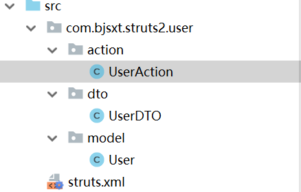

第一课. Struts2简介及学习方法简介.
目录：
Action
- 简单数据校验
Result
常用配置文件
OGNL&ValueStack
Tags
——————Project
类型转换、上传和下载、interceptor、防止重复提交
MVC思想深入剖析
源码解读
其他话题
- 校验框架、I18N、Ajax、FreeMarker、异常处理
Webwork和Struts1合并，形成Struts2
第二课. Struts2_HelloWorld_1.
创建一个java web工程，起名叫做Struts2_0100_Introduction
从https://struts.apache.org/download.cgi
下载我们需要的struts2，解压，可以看到解压后的目录结构如下：
我们从apps下找到blankXXX.war这个压缩包（貌似struts2.5已经没有了，所以只拿教程中的struts2.1.6来练习）
我们先把struts2-blank-2.1.6.war进行解压：
1、将WEB-INF/classes下的struts.xml粘到我们创建的工程的src目录下：
2、再将WEB-INF/lib下被圈中的jar包导入我们创建工程的module下：
3、将struts2下的WEB-INF/web.xml中的过滤器部分粘到我们工程的web.xml中：
其中<url-pattern>/*</url-pattern> 不要写/*.do或者 /*.action，约定俗成用/*
访问
http://localhost:8888/Struts2_0100_Introduction/hello.action
时，就会自动执行到hello.jsp文件上去。
（注意：访问localhost:8888出错的原因是由于没有编写index.jsp文件）
第六课. Struts2_HelloWorld_5.
第一件事情是把struts.xml文件里面的devMode设置为”true”，按照正常流程来讲，devMode开启之后，再修改文件就会自动在tomcat中reload，但是这个在我的idea中没有生效
我们查看org.apache.struts2.dispatcher.ng.filter.StrutsPrepareAndExecuteFilter源码：
然后我们在src下创建一个T.class：
import org.apache.struts2.dispatcher.ng.filter.StrutsPrepareAndExecuteFilter;
public class T {
StrutsPrepareAndExecuteFilter f;
}
第八课. Struts2_HelloWorld_7_1
struts2的执行流程:
当用户在浏览器中敲入要访问的地址
http://localhost:8888/Struts2_0100_Introduction/helle.action
的时候，浏览器会将这个请求发送给tomcat然后tomcat判断应该交给哪个WebApplication来处理，然后会读取它下面的web.xml配置发现有配置：
它会过滤所有的请求然后就交给filter类org.apache.struts2.dispatcher.ng.filter.StrutsPrepareAndExecuteFilter处理执行调用doFilter()方法，然后再方法中会读取struts-xml文件，根据用户请求的地址找到相应的namespace、 action、 result、然后将相应的页面jsp返回给浏览器
整个流程图如下：
这个过程其实就是在client到要获取的jsp过程中加了一层用来处理，这样就实现了把请求和视图分开.
第十课. Struts2_Namespace命名空间.
Action内容：
Action入门
- struts作用
Namespace
定义自己的Action
路径设置
调用Action的自定义方法
通配符
接收用户输入（3种方式）
乱码问题解决
简单数据校验
action中访问web元素
包含模块配置文件
默认action
namespace决定了action的访问路径，默认为””，可以接收所有路径的action（比如为了执行index.action，可以访问http://localhost:8888/Struts2_0100_Introduction/index.action
也可以是http://localhost:8888/Struts2_0100_Introduction/hafsfhkjds/index.action等等）
namespace可以写为/，或者/xxx，或者/xxx/yyy，对应的action访问路径为/index.action，
/xxx/index.action，或者/xxx/yyy/index.action
namespace最好也用模块来进行命名
代码讲解：
在struts.xml文件中：
package相当于java的package，用于区分不同包下相同的命名，避免重名
extends现在就这么写，等讲完配置文件的配置就懂了
namespace写的是什么，你想要访问action的时候就得在前面带上这个namespace，namespace必须以/开头。
例如：
http://localhost:8888/Struts2_0200_Namespace/front/index
package中的namespace和name一般用于模块管理，比如开发一个用户模块，就可以将name=”user”并且namespace=”user”
下面的result的name=”success”，由于success是默认值，所以可以不写。
第十一课. Struts2_Action
访问效果:
重点代码：
看到这个里面的action标签多了一个class。
完整的交互过程：
可以看到上面执行action时遇到一个class的时候，就create一个Action对象IndexAction，然后执行这个action的execute方法，最后方法返回一个success，这样就去执行result里的jsp。
注意：
(1)struts1 与struts2的一个重要区别：在struts1中进行多次访问的时候用到的是同一个Action对象。而struts2则是每一次访问都会创建一个Action对象，所以struts2不会有线程安全问题的发生
(2)
(3)
(4)实现struts的处理类的时候不要自己随便写类然后定义execute()方法，也不要实现Action类而要从ActionSupport类继承，可以直接使用它为我们定义好的方法.
所以最后上面的繁琐过程就简化为了：
三种实现Action的方法：
第一种：
第二种：
第三种：
我们平时开发，只用第三种继承方法，因为里面封装了特别多的方法，其他两种忘了就可以了。
第十二课. 路径问题
(1)struts2中的路径问题是根据action的路径而不是jsp路径来确定，所以尽量不要使用相对路径。
虽然可以用redirect方式解决，但redirect方式并非必要。
解决办法非常简单，统一使用绝对路径。（在jsp中用request.getContextRoot方式来拿到webapp的路径）
或者使用myeclipse经常用的，指定basePath
(2)request.getContextPath()得到项目的名字,一般用来解决路径问题 如果项目为根目录,则得到一个””,即空的字条串。
request.getscheme()返回的协议名称.默认是http
request.getServerName()就是获取你的网站的域名，如果是在本地的话就是localhost
request.getServerPort()获取服务的端口号
举例（path.jsp）：
一种写绝对路径的方法，是计算出basePath以后，将单个改成：<a href="<%=basePath %>"index.jsp">index.jsp</a>
另外一种就是直接设置所有的链接的前缀：<base href="<%=basePath%>" />
就是我们上面代码写的那样。
这样再写相对路径，都是基于这个basePath来进行叠加的。
第十三课. ActionMethod_DMI动态方法调用.
部署好project运行，运行结果是：
方式1：
方式2:
struts代码如下：
方式1中有一个class是com.bjsxt.struts2.user.action.UserAction，method是add方法，所以直接回去UserAction中调用add方法：
package com.bjsxt.struts2.user.action;
|
|
返回值是SUCCESS，而result没有name，所以直接算默认值是SUCCESS，这样就返回/user_add_success.jsp的结果并进行显示。
如果另外有一个方法delete，那么久需要创建一个新的Action对象，如果还有其他方法也需要创建其他的Action对象，所以很繁琐，不建议使用（忘了就可以了）。
第二种方式直接将action命名为user，并且没有method，这样返回的结果是
http://localhost:8888/user/user!add
add是user的一个方法，这种就叫做动态调用
第十四课. ActionWildcard通配符配置.
看页面效果：
我们点击添加学生的链接以后，直接匹配到了actions包下的Studentadd的action
看我们的struts.xml：
在index.jsp页面中点击添加学生按钮，就会点击这样的链接：<a href="<%=context %>/actions/Studentadd">添加学生</a>
这个链接其实就是：
localhost:8888/actions/Studentadd
它在struts.xml中首先匹配到了name=”actions”的package，然后在这个包下面匹配到了action name=”Student“ 然后就被add代替，后面的method也被占位符*所表示的add所取代，就会到StudentAction类中去执行add方法，返回结果是SUCCESS,于是就执行result，将Studentadd_success.jsp的结果返回回来。
第十五课. 用Action的属性接收参数.
定义UserAction的类，里面定义两个属性name和age，然后定义它们的getter和setter，再定义add()方法
|
|
然后在index.jsp中定义<a href="user/user!add?name=a&age=8">添加用户</a>
这样会在struts中搜索到匹配的Action对象，并用这个对象的add方法处理参数
第十六课. 用DomainModel接收参数.
运行效果：
新project中定义了三个类:UserAction、UserDTO、User：

其中UserAction就是匹配struts.xml中的action进行处理的action，代码如下：
在链接中已经直接给DomainModel，也就是User进行了赋值。User代码如下：
这里还设计了一个UserDTO类，重要是用于在action和DomainModel之间传递数据。示例图如下：
第十七课. 用ModelDriven接收参数
运行效果如下：
在上一个project中，链接是user.name和user.age来对DomainModel进行设置，但是这一次我们直接进行对name和age设置。
类组织如下：
来看UserAction的代码：
|
|
里面涉及到了一个ModelDriven，我们再来研究ModelDriven，代码如下：
可以看到，ModelDriven只有一个getModel方法，我们的UserAction实现了这个方法，返回了一个DomainModel，也就是user
完整的执行机制：
总结一下：
Struts2中Action接收参数的方法主要有以下三种：
1.使用Action的属性接收参数：
a.定义：在Action类中定义属性，创建get和set方法；
b.接收：通过属性接收参数，如：userName；
c.发送：使用属性名传递参数，如：user1!add?userName=Magci；
2.使用DomainModel接收参数：
a.定义：定义Model类，在Action中定义Model类的对象（不需要new），创建该对象的get和set方法；
b.接收：通过对象的属性接收参数，如：user.getUserName()；
c.发送：使用对象的属性传递参数，如：user2!add?user.userName=MGC；
3.使用ModelDriven接收参数：
a.定义：Action实现ModelDriven泛型接口，定义Model类的对象（必须new），通过getModel方法返回该对象；
b.接收：通过对象的属性接收参数，如：user.getUserName()；
c.发送：直接使用属性名传递参数，如：user2!add?userName=MGC
其中第一种偶尔用，第二种常用，第三种不经常用，所以要牢记第二种用法。
第十八课. Struts2.1.6版本的中文问题.
运行：
后台看到结果：
可以显示中文字符~
struts.xml内容：
一句就可以解决中文显示问题了。
下面这个是web.xml的内容，之前我们用的是第二个filter，也就是旧的filter，没有问题，可以正常显示中文，但是使用新的filter时，就是下面的代码时，name就会显示乱码
|
|
乱码：
之后我们会用Spring的过滤器解决这个问题。
第十九课. 简单数据验证
读源码方式：从jsp页面开始读起
我们先看一下运行效果：
先看一下index.jsp的代码：
点击添加用户后就执行user/user!add?name=a这个action
看一下struts.xml的代码：
|
|
链接首先匹配到user的package，是user，然后在user下执行user这个action，并且传入name=a的参数，它的Action对象是com.bjsxt.struts2.user.action.UserAction，该类代码如下：
执行这个对象的add方法，由于name不等于admin，所以执行：
addFieldError方法就是向ValueStack中的fieldError中添加域错误信息。
查看Value Stack中的信息：
发现Value Stack是一个栈，存的是一个一个键值对，键是Property Name，值是Property Value，值中又存的是一个Map比如我们的errors，键是name，值是一个数组，包括name is error和name is too long这两个值， 看一下user_add_error.jsp中的代码
其中<s:fielderror fieldName="name" theme="simple"/>
以固定的css样式取出错误信息，不方便我们进行相应的处理
为了用我们自己的样式来显示错误信息，我们利用如下的写法，将Value Stack中的一个元素取出来，这样就可以加上我们的css样式了:<s:property value="errors.name[1]"/>
为了显示详细的栈信息，可以如下写：<s:debug></s:debug>
这里再声明一下，<%@taglib uri="/struts-tags" prefix="s" %> 这一句是将struts-tags.tld引入进来，文件位置如下：
我们的<s:fielderror …>就是用了其中的标签，可以将UserAction中的参数值传入进来，比如我们的UserAction中name=a，那么fieldname中的name也就等于了a
第二十课. 简单数据验证_2
在值栈中可以为同一个名字加多个值，比如
就为name这个名字添加了两个FieldError，在上一节的值栈也可以直观地看到这一点。
第二十一课. 访问Web元素_1
先看一下运行效果：
输入一个用户名r，密码r
得到下面的结果：
我们来读源码，先看index.jsp内容：
点击第一个按钮，会执行onclick里面的js代码，取到了form，action是login/login1
再看一下struts.xml内容：
匹配到login这个package，发现action有通配符，匹配成功，执行LoginAction1这个类的对象。查看对应java代码：
里面request是从
(Map)ActionContext.getContext().get(“request”);
这样的方式取到的，这时候就需要getContext其实拿到的就是我们的Stack Context，Context在servlet是servlet context，在jsp中就是application，也就是上下文。我们查看我们的Stack Context，就是上下文栈，里面有request，session，也有application，通过get(“request”)，getSession()和getApplication()就可以拿到对应的Map
然后在request、session和application中存值：
在我们一开始的前台页面可以看到这三个值是存放成功的，其实这里struts2做了一个工作，就是把我们定义得到Map中存放的值导入到了HTTP报文中，所以可以在HTTP中的request、session和application中可以直接去访问信息。
user_login_success.jsp代码如下：
发现前台是是通过直接方法HTTP的request、session和application来显示信息的。Value Stack内容可以直接拿，但是Stack Context中内容需要在前台使用#来取，也就是我们上面写的：<s:property value="#request.r1"/>
取到了request中r1的值。
后面的<%=request.getAttribute("r1") %>
是使用传统jsp方式取到了request值，和前面效果一样。
<s:property value="#attr.a1"/>会在Stack Context中搜索request、session和application来查找值叫a1的属性是什么，查到了就返回来，不建议使用，因为通常情况下我们没有准确知道一个值是属于request、session还是application。
第二十二课. 访问Web元素_2
来看第二种获取web元素的方式：
查看LoginAction2.java：
发现这个代码很有趣，因为之前我们的request等需要自己取出，然后再使用，而现在，我们的setRequest参数列表中，直接给我们传入一个Map
其实这里涉及到了一个设计方法，第一个叫DI(dependency injection)–依赖注入
第二个叫IoC(inverse of control)– 控制反转
这个过程的流程图如下：
首先struts2创建一个LoginAction对象，然后查看是否实现了RequestAware接口，如果实现了，就可以使用setRequest(Map request)这样的方法来依赖注入，也就是原先是自己去获取getContext，然后调用方法，是主动地，但是现在是struts帮我们注入一个request，这就叫做依赖注入，也叫做控制反转，就是从主动变为被动。
我们访问web元素时，只用这种方法。
为了直接访问HttpRequest，而不是通过Map来访问，可以定义使用第三种方法（LoginAction3.java）：
直接定义HttpServletRequest并获取来进行访问，这种方式基本不用，所以可以忘记了。
第四种方式也是依赖注入的，代码如下（LoginAction4.java）：
第四种方式也基本不用。
综上所述，我们只用第二种方式，其他三种方式理解就可以了。
第二十三课. 模块包含.
struts.xml文件如下：
里面就是把login.xml包含进来，目的是为了模块化，不同的人开发不同的xml，最后将共同的一些配置在struts.xml中进行定义，并且将这些不同的xml文件include进来。
第二十四课. 默认Action
我们先来查看struts.xml文件内容：
如果把<default-action-ref name="index"></default-action-ref>
这一句注释掉，那么直接访问就会localhost:8888会报错，因为没有找到对应的Action，如果加上这一句，在没有找到Action的时候，也会执行default.jsp，就是默认Action，即使URI输错了，也会跳到默认Action：
这样，我们可以利用这个功能，来制作类似404 Not Found这样的页面。
第二十五课. Action总结
- 实现一个Action的最常用的方式：从ActionSupport继承
- DMI动态方法定义!
- 通配符设置*{1}{2}…
a)*_*
b) *|*(其他都可以，但是不能**) - 接收参数的方法（一般用属性或者DomainModel来接受）
- 简单参数验证addFieldError
a) 一般不使用Struts2的UI标签 - 访问Web元素
a) Map类型
i. IoC
ii. 以来Struts2 - 包含文件配置
- 默认action处理
再精简总结，Struts非常简单，就是从ActionSupport继承实现一个Action，然后自己定义add、delete等方法，用DomainModel来接受参数，如果需要访问Web元素，就使用IoC来访问。这就是Struts2中Action的全部精髓。